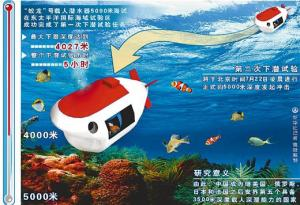
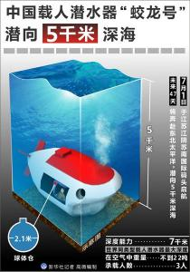
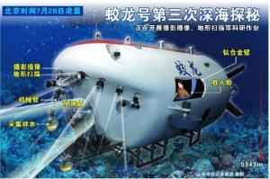

Historical evolution
The sea trial work
3000 meters sea trial
since August 2009, the "jiaolong" manned submersible has organized and carried out 1,000-meter and 3,000-meter sea trials. From May 31 to July 18, 2010, "Jiaolong" manned submersible has achieved great success in the 3000-meter-class sea test in the South China Sea. A total of 17 dives have been completed, including 7 dives through 2000 meters, 4 dives through 3000 meters, and the maximum dives reach 3,759 meters, exceeding the global average depth of 3,682 meters. It has also created a record of 9 hours and 3 minutes of underwater and submarine operations, verifying the various performance and functional indexes of "Jiaolong" manned submersible in 3000-meter-class water depth.
5000 sea trial
the 5000m sea trial is a key task in the marine technology field under the national high technology research and development plan (863 plan). entrusted by the Ministry of science and technology, organized by the state oceanic administration and implemented by COMRA, it aims to test and evaluate the technical improvement effect of the "jiaolong" manned submersible after the 3000m sea trial, as well as its safety performance and operation capability at a depth of 5000m, laying a foundation for further depth sea trials and future practical applications.
a total of 96 researchers from 13 units took part in the sea trial. During the sea trial, all the members of the team completed 5 dives in the E1, E2 and E3 test sea areas in the eastern Pacific Ocean. A total of 8 people completed 15 dives with depths of 4027, 5057, 5188, 5184 and 5180 meters respectively. The submersibles have completed a number of bottom-sitting tests on the seabed. They have also carried out various operational tests and applications in the COMRA polymetallic nodule exploration contract area, such as seabed photography, camera shooting, seabed topography measurement, marine environmental parameter measurement, seabed fixed-point sampling, etc. They have completed various experimental tasks.
The "Xiang Yanghong 09" carrying the "Jiaolong" has arrived at the northeast Pacific polymetallic nodule exploration contract area more than 300 nautical miles away from the third option area. According to the plan, it will go to sea in the early morning of the 28th. The specific time should be determined by the site command according to the weather and hull conditions at that time.
this contract area is the preferred sea area for the "jiaolong" to hit a depth of 5000 meters. After arriving at the northeast Pacific polymetallic nodule exploration contract area on July 16, the sea trial headquarters was scheduled to conduct the first test on the afternoon of the 17th, but due to the heavy wind and waves in the test sea area, it was unable to meet the operation requirements. After consulting the "Jiaolong" sea trial leading group, the commander-in-chief of the sea trial site decided to move southward and finally chose the third alternative area with relatively good sea conditions.
First dive
at 3 a.m. on July 21, 2011, China carried out a 5,000-meter deep dive and the jiaolong successfully dived. After more than 5 hours of underwater work, the Jiaolong successfully made its first deep dive at 8 o'clock on July 21, 2011. The three pilots on the Jiaolong submersible are Cui Weicheng, Ye Cong and Yang Bo.
second dive test
at 3: 38 on July 26, 2011, the second dive test mission officially started. The sailors who took part in the diving mission were Ye Cong, Yang Bo and Fu Wentao.
at 4: 46 on July 26, 2011, the diving depth reached 2,000 meters;
July 26, 2011 at 5: 40, reaching 4072 meters;
At 6: 07 on July 26, 2011, the water depth of 5000 meters was successfully exceeded.
at 6: 17 on July 26, 2001, descend to 5057 meters water depth;
at 6: 48 on July 26, 2001, the submersible began to float after throwing away the ballast iron.
at 9: 30 on July 26, 2001, it surfaced and successfully broke the 5000-meter water depth mark in the second diving test.
At 10 o'clock on July 26, 2001, it was recovered to Xiang Yanghong 09. All the instrument indexes and communication in the whole process were normal.
2 this diving test has completed the set goal, reaching a maximum depth of 5057 meters, creating a new history for China's manned deep diving.
2 the whole process lasted nearly 6 hours. the submarine crew verified the underwater functions of the submarine at a depth of 5,000 meters, carried out several bottom-sitting tests, and took photos of benthic organisms at the same time. The success of this dive has laid a good foundation for the following third dive-underwater operations such as submarine observation and sampling.
third dive test
On July 28, 2011, after 9 hours and 14 minutes, China's 7000-meter Jiaolong manned submersible successfully completed the third launching mission of the 5000-meter-class marine test. The maximum depth of this dive was 5188 meters, setting a new record for China's manned deep dive. It also carried out a number of scientific investigation missions such as bottom-sitting, seabed photography, acoustic measurement, sampling, etc., and also set a record for the longest time of underwater operation of Jiaolong. During this launch, Jiaolong has verified its technical function and performance index in a deep environment and successfully completed scientific research and test tasks.
fourth dive test

On June 24, 2012, the "Jiaolong" manned submersible conducted its fourth diving test at the Mariana Trench in the western Pacific Ocean during its 7000-meter sea trial.
at 5: 29 on June 24, 2012, the submersible began to submerge with water.
at 6: 44 on June 24, 2012, the "jiaolong" submerged more than 3000 meters;
at 7: 40 on June 24, 2012, the "jiaolong" submerged more than 5100 meters;
at 8: 54 on June 24, 2012, the diving depth was 7005m;
at 9: 15 on June 24, 2012, the submersibles were already at the bottom with a maximum depth of 7020 meters.
fifth dive test
during the 5th dive of the 7000-meter class sea trial, which started at 5: 29 on June 27, 2012, jiaolong once again broke the dive depth record of the same type of submersible.
at 11: 47 on June 27, 2012, the jiaolong reached a depth of 7062.68 meters.
around 12: 00 on June 27, 2012, the throwing load began to float upward.
returned to the water at about 1530 hours on June 27, 2012.
sixth dive test
Ye Cong, Cui Weicheng and Zhang Dongsheng served as pilots and Liu Feng served as commander-in-chief of the sea trial. The main task of this diving test is to "check for defects and fill gaps" on the basis of comprehensive analysis of the results of the first five diving tests, and arrange the corresponding test contents.
at 5: 23 on June 30, 2012, the "jiaolong" manned submersible was deployed to enter the water and began the 7000-meter sea trial. the sixth dive test was also the last of all sea trials.
at 9: 56 on June 30, 2012, the "jiaolong" reached the maximum depth of 7035 meters and sat at the bottom. Later, the Jiaolong began to float after completing its two-hour operation at the bottom of the sea.
at 1433 hours on June 30, 2012, the "jiaolong" surfaced and completed all the tests of China's "jiaolong" 7000-meter sea trials.
triumph of diving test
On the morning of July 16, 2012, with the smooth return of "Xiang Yanghong 09" to Qingdao, the 44-day 7000-meter class sea trial of Jiaolong manned submersible was successfully completed, which also marked the successful completion of the 10-year development and sea trial of Jiaolong under the continuous support of the National High-tech Research and Development Program (863 Program).
passed the acceptance
the development and sea trial of jiaolong manned submersible passed the expert acceptance organized by the Ministry of science and technology on April 27, 2013 in Wuxi, Jiangsu province.
the acceptance expert group believes that jiaolong manned submersible not only has the maximum diving depth of the same type of submersible in the world, but also is safe and reliable in its maximum design depth, and has the actual operation capability required for application, and has obvious leading advantages in acoustic communication, automatic control and large-depth operation. The research and development of Jiaolong manned submersible and its sea trial project have all completed the tasks approved by the Ministry of Science and Technology, and have fully reached the assessment targets and technical indicators stipulated in the contract. The acceptance expert group unanimously agreed that the Jiaolong development and sea trial project passed the acceptance.
the successful development and sea trial of jiaolong manned submersible indicates that China has systematically mastered the design, construction and test technology of deep manned submersible, has realized the transformation from tracking and imitation to autonomous integration and innovation, and has become one of the world's advanced countries in manned deep diving. After the Jiaolong passed the acceptance, it was officially transferred from the 863 Program of the Ministry of Science and Technology to its users, China Ocean Mineral Resources Exploration and Development Association, to play a pioneering role in the exploration of deep sea mineral resources and deep sea scientific research in the future.
the development and sea trial of jiaolong manned submersible is a major national scientific research task supported by the national high technology research and development (863) program in the fields of advanced manufacturing technology and marine technology. it took 10 years and the 863 special fund has invested 350 million yuan. The task is led by the office of China Ocean Mineral Resources Exploration and Development Association and is completed by more than 100 research institutes and enterprises in conjunction with China Shipbuilding Industry Corporation, Chinese Academy of Sciences, Ministry of Land and Resources, State Oceanic Administration, Ministry of Education and other systems.
The acceptance panel consists of 15 experts from Tsinghua University, Shanghai Jiaotong University, China Shipbuilding Engineering Society, China National Offshore Oil Corporation and other units, with Academician Xu Guanhua as the panel leader.